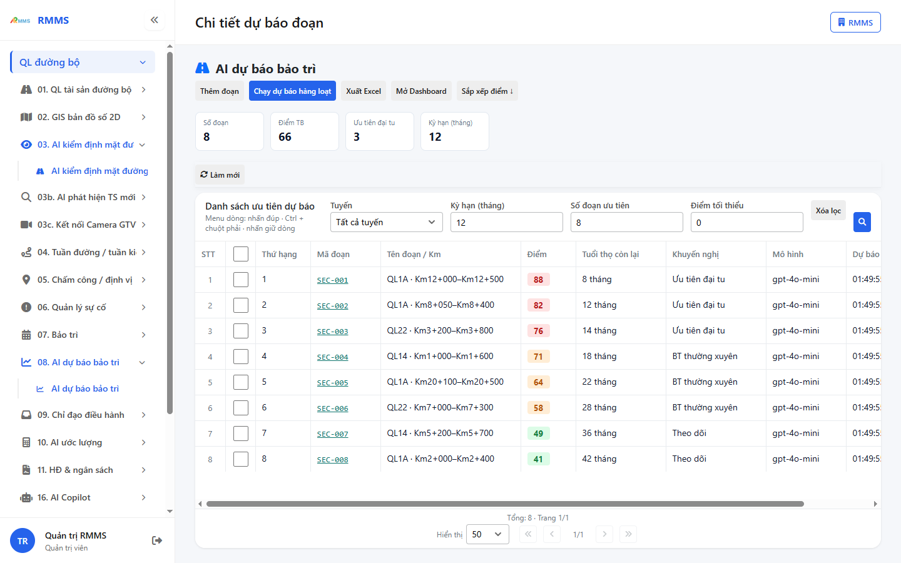
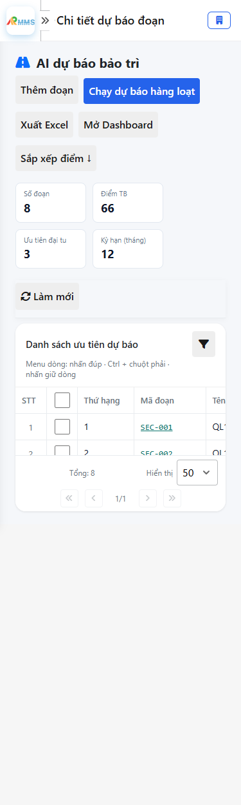
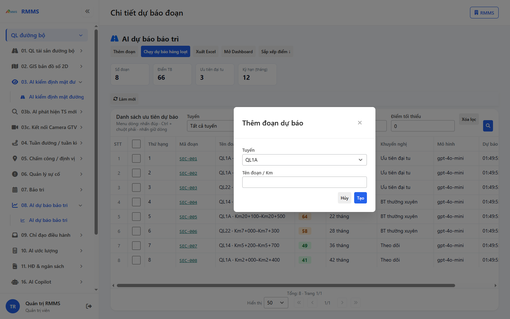
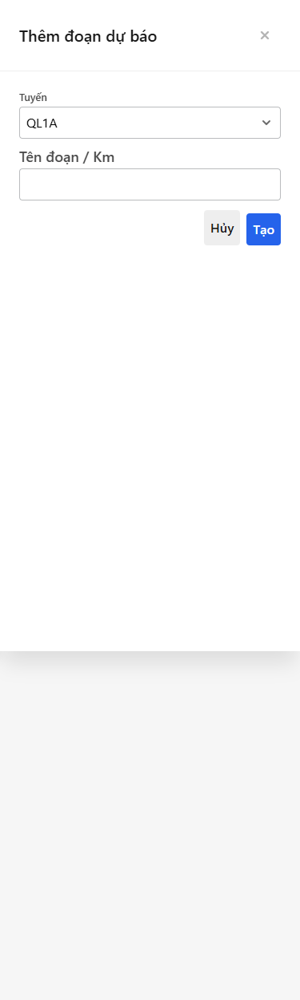

Bản in: tắt «Tiêu đề và chân trang» của trình duyệt.
Tài khoản được cấp quyền menu 08. AI dự báo bảo trì thao tác AI dự báo bảo trì.
| Luồng | Mô tả | Bắt đầu | Kết thúc | Người thực hiện |
|---|---|---|---|---|
| Mở danh sách | Vào menu AI dự báo bảo trì | Đăng nhập | Danh sách / trang | Tài khoản được cấp |
| Thêm mới | Nhấn Tạo mới / Thêm | Danh sách | Lưu phiếu | Tài khoản được cấp |
graph TD
A[Đăng nhập] --> B[AI dự báo bảo trì]
B --> C[Tạo mới]
C --> D[Lưu]
Đăng nhập: xem Hướng dẫn đăng nhập.
* = bắt buộc khi Lưu / Gửi. Ô trống = không bắt buộc.Mục đích: mở và tra cứu AI dự báo bảo trì.
Cách thực hiện:


Màn hẹp: xếp dọc, nút chính phía trên.
| Cột | Ý nghĩa |
|---|---|
| STT | STT |
| Thứ hạng | Thứ hạng |
| Mã đoạn | Mã đoạn |
| Tên đoạn / Km | Tên đoạn / Km |
| Điểm | Điểm |
| Tuổi thọ còn lại | Tuổi thọ còn lại |
| Khuyến nghị | Khuyến nghị |
| Mô hình | Mô hình |
| Dự báo lúc | Dự báo lúc |
Nút trên màn: Thêm đoạn · Chạy dự báo hàng loạt · Xuất Excel · Mở Dashboard · Sắp xếp điểm giảm · Làm mới · Xóa lọc · SEC-001 · SEC-002 · SEC-003 · SEC-004 · SEC-005 · SEC-006 · SEC-007 · SEC-008 · Đầu.
Mục đích: lập bản ghi AI dự báo bảo trì.
Cách thực hiện:
*.

Màn hẹp: xếp dọc, nút chính phía trên.
* = bắt buộc khi Lưu / Gửi. Ô trống = không bắt buộc.
| Nhãn trên màn | * | Cách điền |
|---|---|---|
| Tuyến | Được để trống | |
| Kỳ hạn (tháng) | Được để trống | |
| Số đoạn ưu tiên | Được để trống | |
| Điểm tối thiểu | Được để trống | |
| Tuyến | Được để trống | |
| Tên đoạn / Km | Được để trống |